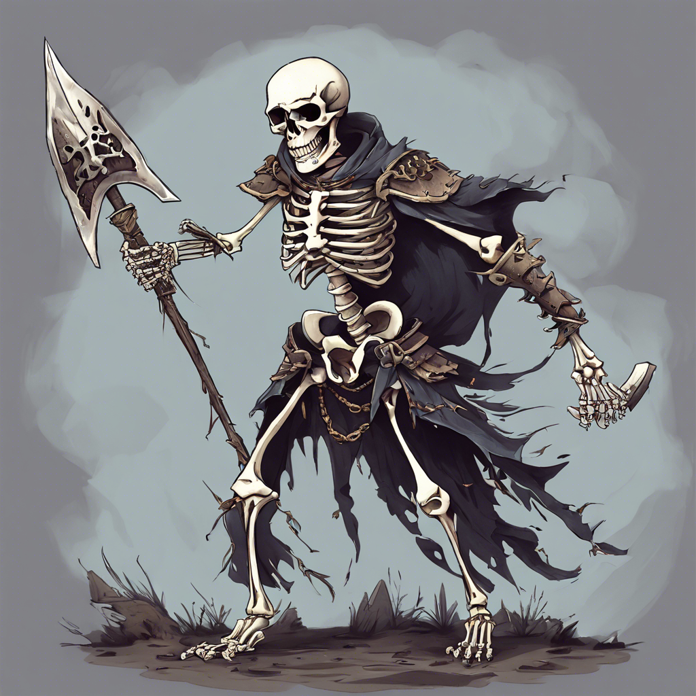

30. A lépések egyre közelednek. Hirtelen mennydörgéshez hasonló hang visszhangzik végig a barlangon. Körülnézve látod, hogy mindkét boltíves kijáratot hatalmas kőtáblák zárják le. Csapdába kerültél. Lapozz a 13-ra.

Lapozz a 13. oldalra